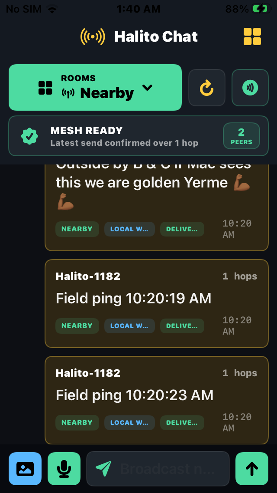
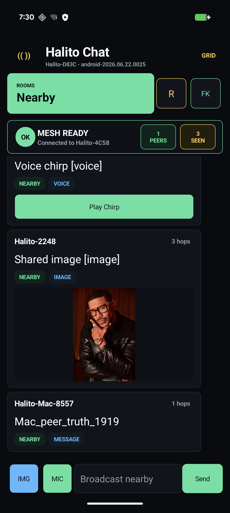

Packets track their route and can relay through other devices when direct range is not enough.
Offline mesh messaging for real-world coordination
Halito Chat
A local-first messenger that keeps teams talking when towers, Wi-Fi, and cloud apps stop helping.
2+Live hops tested
3Device families
0Cloud required
Built for the moment the normal network fails.
Halito turns nearby phones and desktops into a local coordination layer for crews, families, venues, and field teams.
Shared-key rooms keep sensitive local channels sealed while still allowing relay.
Fast voice notes bring a field-radio feel to phone-based team communication.
A Mac or desktop browser can run the local operator board with peers, routes, and reports.
Share images and short voice packets with compact previews for field-friendly scrolling.
The offline mesh stays first. Bridge/global features can be enabled only when the operator chooses.
Field proof, not theory
Tested on iPhone, Android, Mac, and browser command center.
- Two iPhones and Mac Command Center connected live with friendly names synced.
- Wavey to Leon to Mac proved a real 2-hop relay path.
- Pixel screenshots show local mesh activity without normal internet indicators.
- Private-room traffic is redacted from Command Center logs.


For teams that cannot afford silence.
The first launch lane is Field Kit: practical communication for groups that need local resilience, not another social feed.
EventsFestivals, shows, pop-ups
SecurityVenue and patrol coordination
SchoolsLocal response channels
FamiliesPreparedness and outages
ChurchesLarge-building coordination
WarehousesDead-zone messaging
NeighborhoodsBlock-level backup comms
Field crewsConstruction and rural work
Operator-grade visibility
Command Center sees the mesh without becoming the cloud.
Run a local dashboard for peer status, delivery receipts, route health, and field reports. Keep the bridge off by default when security matters.
Leon connected
Wavey connected
Wavey -> Leon -> Mac
Field ping received at 2 hops
Private room: sealed and hidden
Bring Halito Chat to your next field test.
Early access is for teams willing to test range, routes, battery life, and real deployment workflows.
Start a field test